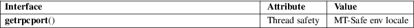

getrpcport − get RPC port number
Standard C library (libc, −lc)
#include <rpc/rpc.h>
int
getrpcport(const char *host, unsigned long
prognum,
unsigned long versnum, unsigned int
proto);
getrpcport() returns the port number for version versnum of the RPC program prognum running on host and using protocol proto. It returns 0 if it cannot contact the portmapper, or if prognum is not registered. If prognum is registered but not with version versnum, it will still return a port number (for some version of the program) indicating that the program is indeed registered. The version mismatch will be detected upon the first call to the service.
For an explanation of the terms used in this section, see attributes(7).

BSD.
BSD, Solaris.